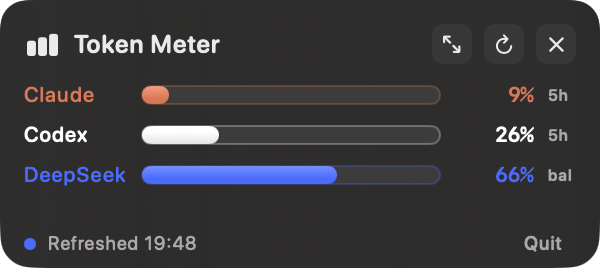

Token MeterThe token meter that fits in the corner of your eye.
A menu-bar widget for macOS that shows how much of your Claude, Codex and DeepSeek allowance you have used. Three bars, one status line, 300 by 134 points. It reads the same numbers your providers report, so there is nothing to configure and nothing to guess.

Try it
A faithful CSS copy of the panel. Click the arrows to grow it, the circle to refresh, the bar-chart icon in the fake menu bar to hide and show it.
Small
Header, three bars, one status line. Expands to 438×384 when you want the detail rows, and remembers your choice.
Five source files, SwiftUI plus AppKit. No packages, no Electron, no background helper. Builds with swift build.
Also refreshes when you open the panel and when you press the button. Floats above windows and follows you across Spaces.
Smart
Every bar is percentage used of a live, provider-reported window. Claude comes from the same endpoint as Claude Code's /usage. No manual token caps to keep up to date.
Claude's bar is whichever of the 5-hour and 7-day windows is fuller, tagged so you know which. Orange at 75%, red at 90%.
Codex quota only exists in Codex's own session logs, so the row says LIVE, SEEN with a time, or STALE instead of pretending.
In compact mode a plan or balance warning that would only live in a detail row moves into the footer, so the small panel never hides bad news.
The Claude OAuth token is read from the login Keychain into memory and sent only to Anthropic. The DeepSeek key goes only to DeepSeek. Nothing is printed, copied or stored.
The build script compiles and runs the collector's self-test first. If the log parsers break, you do not get an app.
Install
macOS 14 or later with the Xcode command-line tools.
git clone https://github.com/huang-zi-zheng-22/token-meter.git
cd token-meter
./scripts/install.shOn first launch macOS asks whether the widget may read the Claude Code-credentials Keychain item. Choose "Always Allow", or the Claude row stays OFFLINE with local counts only.